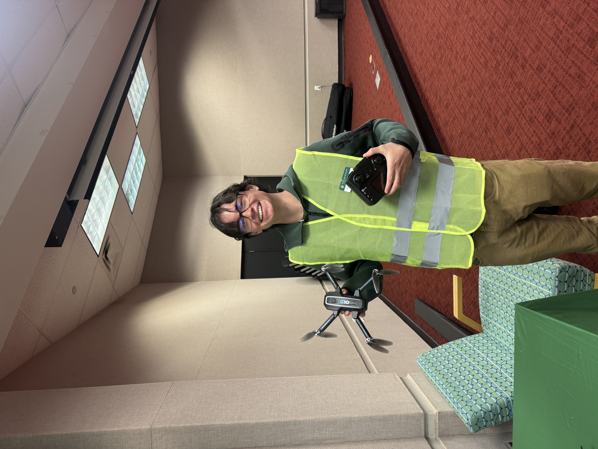

Euan McPhie
GIS Analyst · Web Mapper · Washington, DC
My journey into GIS began with a fascination for how place shapes everything. Geography is a versatile discipline ultimately driving decisions in sectors like public health, urban planning, environmental management, and beyond.
Through my studies and independent projects, I've developed expertise across the full geospatial stack: from data collection in QGIS, to managing and updating an Enterprise server. I'm especially interested in how historical maps can be rediscovered using modern classification and analysis strategies to surface patterns that aren't visible on paper alone.
Outside of GIS, I'm interested in hiking, sailing, and Newcastle United F.C.
Currently seeking roles in geospatial analysis, historical research, web mapping where I can keep building the future of what maps can do.
Background
Research Interests
- Historical mapping
- Environmental change detection
- Interactive & narrative cartography
- Remote sensing
Technical Skills
- ArcGIS Pro & ArcGIS Online
- QGIS
- ArcGIS Enterprise
- Python (ArcPy, GeoPandas, Pandas)
- SQL & Spatial Queries
- Network Analysis
- Spatial Analysis & Cartography
- Remote Sensing (ENVI, Landsat, Sentinel-2)
- ArcGIS StoryMaps & Dashboards
- HTML, CSS, JavaScript
- GitHub
Certifications
- FAA Part 107 Remote Pilot Certificate
- Esri Spatial Data Science MOOC
- First Aid & CPR